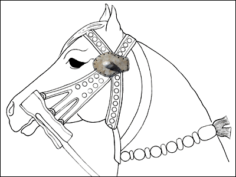

The Challenge -
Horse ornament - limestone

Horse ornaments like this one were fixed to horse bridles and may have been used to protect the animal's cheek or eye. This example comes from an area of Nimrud known today as Fort Shalmaneser. This was a palace built by the Assyrian king Shalmaneser III (858-824 B.C.). It combined a camp, factory, storehouse and arsenal, where the army gathered for the yearly military campaign.
|
|